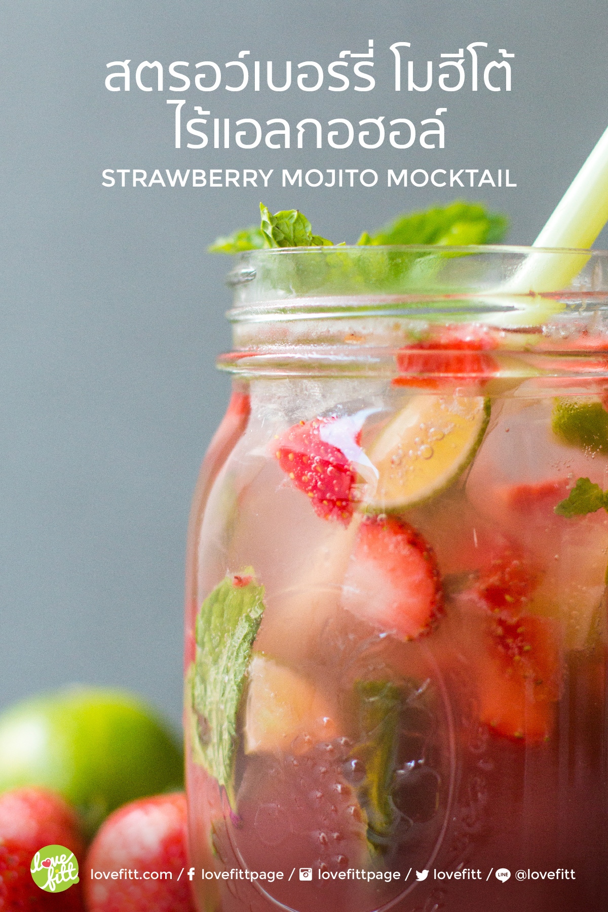

สตรอว์เบอร์รี่ โมฮีโต้ เครื่องดื่มไร้แอลกอฮอล์ ที่ช่วยดับกระหาย ให้ความสดชื่น ปรับเปลี่ยนมาใช้น้ำผึ้ง แทนน้ำอัดลม เพิ่มกลิ่นหอมและรสชาติ ด้วยสตรอว์เบอร์รีสดๆ มะนาว และใบสะระแหน่ ดื่มแล้วได้คุณค่า ช่วยคลายร้อน
ยังคงอยู่ในหน้าร้อน อากศร้อนแบบนี้เรื่องอาการกระหายน้ำต้องเกิดขึ้นแน่นอน การอาการกระหายน้ำเป็นสัญญาณเตือนเริ่มแรกของภาวะร่างกายขาดน้ำ หรือ มาจากการดื่มน้ำไม่เพียงพอนั่นเอง ยิ่งอากาศข้างนอกร้อนแบบนี้ ทำให้ร่างกายมีการเสียเหงื่อมากจากกิจกรรมต่างๆ หรือแม้แต่การเสียเหงื่อจากการออกกำลังกายมากขึ้น เป็นสาเหตุให้เกิดอาการขาดน้ำได้ ดังนั้นหมั่นเตือนตัวเองให้จิบน้ำ และดื่มน้ำตลอดทั้งวัน ซึ่งน้ำที่ดีที่สุดกับร่างกายก็คือน้ำเปล่า ควรดื่มให้ได้ 8-10 แก้วต่อวันเป็นดี
แต่ถ้าหากต้องการความรู้สึกสดชื่น และพลังงานมากกว่านั้น ก็สามารถทดแทนด้วยการดื่มเครื่องดื่มที่มีความหวานอย่างน้ำผลไม้ก็ได้ แต่ต้องเลือกดื่มบนพื้นฐานของปริมาณพลังงานที่ร่างกายต้องการ เพราะหลายคนเข้าใจผิดว่าดื่มน้ำหวานๆ น่าจะไม่อ้วนเท่าทานอาหารหลัก แต่ถ้านำน้ำหวานทุกแก้วตลอดวันมารวมกัน อาจมีพลังงานมากกว่าอาหารดีๆ 1 มื้อเสียอีก
วันนี้เลยอยากนำเสนอเมนูเครื่องดื่ม ให้ไปทำทานกันให้เย็นชื่นใจ สร้างความสดชื่นให้กับวันร้อนๆ แถมได้ประโยชน์จากผลไม้สด ยิ่งใกล้เทศกาลสงกรานต์เข้ามาทุกที ใครอยากจะมีปาร์ตี้ที่ไร้แอลกอฮอล์ ก็นำสูตร Mocktail นี้ไปทำดื่มกันได้กับ “ สตรอว์เบอร์รี โมฮีโต้ ม็อกเทล ”
เริ่มจากนำสตรอว์เบอร์รีสด และมะนาวครึ่งผล มาหั่นเป็นลูกเต๋าเตรียมไว้ จากนั้นนำน้ำสตรอว์เบอร์รีใส่ลงขวดแก้ว ผสมกับน้ำผึ้ง น้ำมะนาว จากมะนาวอีกครึ่งผล เติมเกลือเล็กน้อย เติมใบสะระเหน่ และ เนื้อสตรอว์เบอร์รี มะนาวที่หั่นเต๋าไว้ลงไป ปิดฝาขวดแล้วเขย่า ผสมให้เข้ากัน เปิดฝาขวดออก เติมน้ำแข็ง และ โซดาลงไป ตกแต่งด้วยใบสะระเหน่ ก็จะได้เครื่องดื่ม ม็อกเทลไร้แอลกอฮอล์ พร้อมเสิร์ฟเพิ่มความสดชื่นแล้ว ปริมาณพลังงานของเครื่องดื่ม 1 แก้วตามสูตร จะให้พลังงานอยู่ที่ 197 kcal เท่านั้น
มหาวิทยาลัยขอนแก่น
Khon kaen University
เบอร์โทรศัพท์
043-009700
ที่อยู่
123 หมู่ 16 ถ.มิตรภาพ ต.ในเมือง อ.เมือง จ.ขอนแก่น 40002